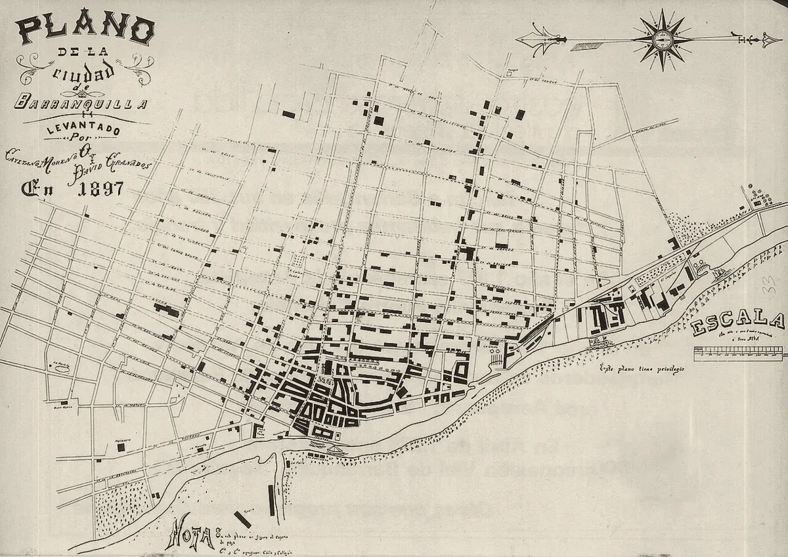

· Edición 9 · 4 min de lectura
Si Villa Campestre pasa a Barranquilla, el cambio grande sería el predial
Revisada el · 1 corrección posteriores a la publicación

Si Villa Campestre pasa a Barranquilla, el cambio grande sería el predial
Ver todo el tema, de principio a fin →
En pocas palabras. El IGAC propuso que Villa Campestre deje de ser de Puerto Colombia y pase a Barranquilla. Para los vecinos, lo que más cambiaría es el predial, el impuesto de la casa; los servicios, poco. Antes de que el Congreso decida, conviene guardar el avalúo y el certificado de estrato de hoy.
Qué pasó. En algunos conjuntos de Villa Campestre, los vecinos izaron la bandera de Barranquilla. Es la primera protesta registrada para pedir que el impuesto lo cobre otro.
En agosto, el IGAC, la entidad que fija los mapas y límites oficiales, propuso una nueva línea. Con ella, Villa Campestre, el Corredor Universitario y Ciudad Mallorquín quedarían en Barranquilla.
El alcalde Alejandro Char dijo que la ciudad "recupera territorios que siempre le pertenecieron". Pero la línea no es ley: la decide el Congreso, y la prensa calcula que tardará de seis a nueve meses.
¿Por qué pasa? El límite nunca quedó claro. El arroyo León servía de frontera, pero se construyó encima y dejó de marcar nada.
Barranquilla creció hacia el norte y cada alcaldía atendió lo que alcanzaba. El resultado es una zona de estratos 5 y 6 donde el vecino no siempre sabe a quién reclamarle por un poste apagado.
Cuando no se sabe de quién es un barrio, las obras terminan siendo de nadie. El impuesto, en cambio, siempre encuentra quién lo cobre.
Qué cambiaría en los servicios. Poco: Triple A ya lleva el agua, el alcantarillado y el aseo en los dos municipios, y Air-e, la luz.
Lo que sí mueve la factura es el estrato, que pone cada alcaldía. Si Barranquilla reclasifica y un conjunto pasa de 5 a 6, en una factura de agua de 200.000 pesos serían unos 13.000 pesos más al mes. (Conocimiento general.)
Qué cambiaría en el predial. Aquí está el cambio grande. El predial se calcula como el avalúo catastral por una tarifa.
En Barranquilla, la tarifa es de 9,7 por mil en estrato 5 y de 11 por mil en estrato 6, sin cambios desde 2008. Un apartamento con avalúo de 400 millones pagaría unos 3,9 millones al año en estrato 5 y unos 4,4 millones en estrato 6.
El avalúo también podría cambiar, porque Barranquilla tiene su propio catastro. Los dos municipios ya han subido avalúos:
- Puerto Colombia actualizó el suyo en 2021 y 2022; en Villa Campestre hubo denuncias de alzas de hasta 600%.
- Barranquilla, en 2026, recibió quejas por avalúos que subieron 40% o más.
Qué pasaría con el precio del apartamento. Probablemente poco: los portales de finca raíz ya anuncian Villa Campestre como Barranquilla, con apartamentos de entre 460 y 1.450 millones de pesos.
Podrían subirlo el alumbrado, las vías y la seguridad que hoy faltan. Podrían bajarlo un predial más alto y, si llegan las obras, la contribución de valorización.
Nuestro cálculo, sin datos duros que lo respalden: el precio podría subir entre nada y 5% en uno o dos años, y solo si las obras se ven.
Quién lo está resolviendo. El IGAC hizo el estudio técnico. Su argumento principal es la "conexión cotidiana" de la zona con Barranquilla. El Congreso tiene la última palabra.
Ya pasó antes. (Conocimiento general.) En 1954, Bogotá se quedó con seis municipios vecinos, entre ellos Suba, Usaquén y Fontibón. Los servicios llegaron con los años; los impuestos, bastante antes.
Pero ojo. Puerto Colombia perdería una de las zonas que más impuestos le pagan. Para un municipio pequeño, es un cambio de presupuesto.
Y para el vecino, las obras prometidas dependen de quién sea alcalde, no de la ley que fija el límite.
Dos lecturas
Las dos posturas sobre el tema, en su mejor versión
La zona es de Barranquilla. Quien vive en Villa Campestre estudia, trabaja y compra en Barranquilla. El límite debería mostrar la ciudad real, y una sola alcaldía responde mejor que dos que se pasan la cuenta.
La zona es de Puerto Colombia. Por ley, ese territorio es del municipio desde hace décadas. Si las ciudades grandes se quedan con las zonas que más pagan, los municipios pequeños pierden la plata de sus barrios más pobres.
Quién decide y cuándo
Quién decide. El Congreso, en las comisiones de ordenamiento territorial, con base en el estudio del IGAC.
Cuándo. La prensa calcula de seis a nueve meses. No hay fecha fija.
Cómo participar. Juntas de acción comunal y administraciones de conjuntos pueden pedir, con un derecho de petición, que las comisiones las escuchen.
Seguimiento de la decisión
Pendiente · sin fecha fija
Congreso (comisiones de ordenamiento territorial): Fijar el límite entre Barranquilla y Puerto Colombia a partir del estudio del IGAC.
La prensa calcula de seis a nueve meses.
La paradoja del día
Lo más absurdo de la edición, en dos líneas
Los vecinos izaron la bandera de Barranquilla para que los adopte. Lo primero que les llegaría de su nueva ciudad no sería el alumbrado, sino el recibo del predial.
Para conversar
La pregunta. ¿De qué ciudad es un barrio? ¿De la que dice el mapa, de la que cobra los impuestos o de la ciudad adonde la gente va todos los días? Y si no son la misma, ¿quién debería ceder?
Qué puede hacer usted. Guarde el último recibo del predial y la factura de Triple A. Si el límite cambia, le servirán para comparar si el nuevo avalúo y el estrato quedaron bien, y para reclamar a tiempo si no.
¿Le interesa ver las fuentes?
Todos los documentos y datos que usamos
14 fuentes: 3 oficiales, 1 de datos, 1 de una organización, 8 de prensa, 1 de referencia.
- Prensa El Heraldo. Villa Campestre pasaría a control de Barranquilla, según límite del Igac
- Prensa El Heraldo. Cuáles son los argumentos del Igac para darle a Barranquilla el corredor universitario
- Prensa El Heraldo. Clamor ciudadano en Villa Campestre por volver a ser parte de Barranquilla
- Prensa El Heraldo. Los estrechos lazos de Villa Campestre con el desarrollo de Barranquilla
- Oficial Alcaldía de Barranquilla. Barranquilla recupera territorios que siempre le pertenecieron: alcalde Char sobre delimitación con Puerto Colombia
- Prensa El Espectador. Char anuncia que Barranquilla asumirá Corredor Universitario, Villa Campestre y Mallorquín
- Prensa Diario La Libertad. ¿De quién es Villa Campestre? Habitantes se plantan ante la pelea entre Barranquilla y Puerto Colombia
- Oficial Alcaldía de Barranquilla. Impuesto predial unificado
- Referencia Certificado de tradición (guía). Impuesto predial Barranquilla 2026: tarifas y calculadora
- Prensa El Heraldo. Controversia por nuevos incrementos a la tarifa del impuesto predial en Barranquilla
- Prensa El Heraldo. Habitantes de Galapa y Puerto Colombia vuelven a pedir soluciones ante incrementos en el impuesto predial
- Oficial Área Metropolitana de Barranquilla. Galapa y Puerto Colombia, modelos en actualización catastral en la Región Caribe
- Organización Triple A. Triple A S.A. E.S.P., empresa de servicios públicos
- Datos Fincaraíz. Apartamentos en venta en Villa Campestre
Glosario
Las palabras técnicas, explicadas
- IGAC (Instituto Geográfico Agustín Codazzi): entidad nacional que hace los mapas oficiales, el catastro en muchas zonas y los estudios de límites entre municipios.
- Avalúo catastral: valor que el catastro le asigna a un inmueble para cobrar impuestos; suele ser menor que el precio comercial.
- Impuesto predial: impuesto anual que cobra el municipio sobre cada inmueble; se calcula como avalúo por tarifa.
- Estrato: clasificación de las viviendas de 1 a 6 que define cuánto se paga en servicios públicos; los estratos 5 y 6 pagan un recargo que subsidia a los estratos 1 a 3.
- Contribución de valorización: cobro a los dueños de inmuebles que se benefician de una obra pública, para ayudar a pagarla.
- Deslinde: procedimiento para fijar el límite exacto entre dos municipios.
Nota metodológica
Cómo se hizo esta edición y qué no pudimos verificar
Esta edición la pidieron los editores: una proyección sobre qué le cambiaría a un residente de Villa Campestre si la zona pasa a Barranquilla. Hicimos unas 10 búsquedas sobre el informe del IGAC, las tarifas de predial, los avalúos catastrales y los precios de apartamentos. No pudimos abrir varias de las páginas completas; trabajamos con resúmenes y resultados de búsqueda.
Quedó sin verificar o con límites:
- La tarifa de predial de Puerto Colombia: no la encontramos, así que no comparamos cuánto se paga hoy frente a cuánto se pagaría.
- Los recargos por estrato en agua y aseo (alrededor de 50% y 60%) y el de energía son de conocimiento general, no de una resolución consultada.
- La proyección de valorización (0 a 5%) es un cálculo razonado, no un dato: no encontramos estudios del efecto de un cambio de municipio en el precio de la vivienda en Colombia.
- Un medio local afirma que el Consejo de Estado ya definió los límites; las demás fuentes dicen que la decisión es del Congreso. Seguimos la versión mayoritaria.
- El IGAC hizo su estudio con unos 15 puntos de referencia; lo dejamos aquí para simplificar el texto.
- Marcado como conocimiento general: los recargos por estrato y la anexión de municipios a Bogotá en 1954.
El plano es de Cayetano Moreno y David Granados (1897) y muestra cómo era Barranquilla entonces; es de otra época y lo usamos para evocar el tema.
Puntaje de impacto. Filtro primero (las cuatro condiciones de nudo) y luego puntaje de 1 a 3; gravedad y cercanía valen doble (máximo 21).
| Tema | Alcance | Gravedad | Duración | Cercanía | Decisión | Total | Resultado |
|---|---|---|---|---|---|---|---|
| Límites Barranquilla y Puerto Colombia | 1 | 1 | 3 | 3 | 3 | 14 | Elegido por los editores |
Correcciones
Datos corregidos después de publicar; cada corrección lleva su fecha.
Corrección ·
Reescribimos la edición en un lenguaje más sencillo, con frases cortas y ejemplos cotidianos. Los datos y las fuentes son los mismos.